Albert Einstein
The man with the genius brain

Picture of the great Albert Einstein with his favourite quote of all time
Albert Einstein's Life Journey
- 1879 - Albert Einstein is born in Ulm, Germany, the first child of Hermann and Pauline Einstein.
- 1880 - The Einstein family moves to Munich, Germany
- 1885 - Einstein enrolls in the second grade of a Catholic elementary school called the Petersschule. He receives Jewish religious instruction at home and also begins taking violin lessons.
- 1888 - Einstein is accepted at the Luitpold Gymnasium
- 1889 - The medical student Max Talmud begins joining the Einstein family regularly for dinner and introduces Albert to scientific and philosophical writings.
- 1894 - The Einstein family moves to Milan, Italy, but Einstein remains in Munich to complete his education at the Gymnasium.
- 1895 - After failing the entry exam for the Zurich Polytechnic, Einstein is accepted to the trade department of the cantonal school in Aarau, Switzerland. He lives with the family of Jost Winteler, a teacher in Aarau.
- 1896 - Einstein's officially renounces his German citizenship.
- 1900 - Einstein receives his diploma as a mathematics teacher and starts work on his doctoral thesis.
- 1901 - Einstein officially becomes a Swiss citizen.
- 1902 - Einstein works as a temporary teacher at the Technical College in Winterthur, Switzerland.
- 1903 - Einstein and Mileva are married in Bern.
- 1904 - Einstein forms the Olympia Academy with his friends Maurice Solovine and Conrad Habicht.
- 1905 - Einstein completes his paper on quantum theory.
- 1905 - Einstein's paper on the special theory of relativity is published in the Annalen der Physik.
- 1909 - Einstein is appointed extraordinary professor of theoretical physics at Zurich University.
A question that sometimes drives me hazy — am I or are the others crazy?
Photos of Einstein
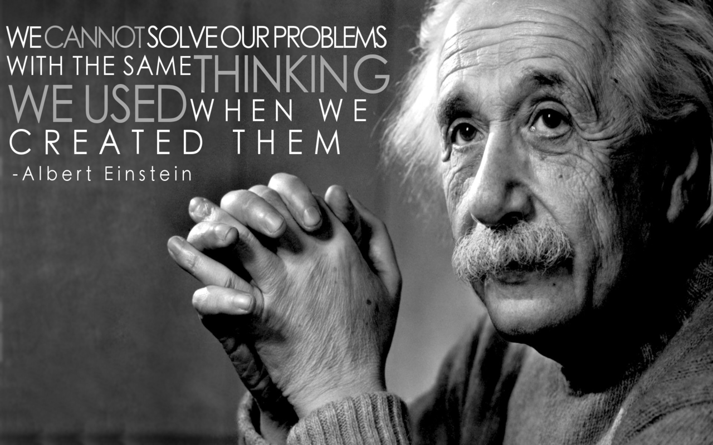
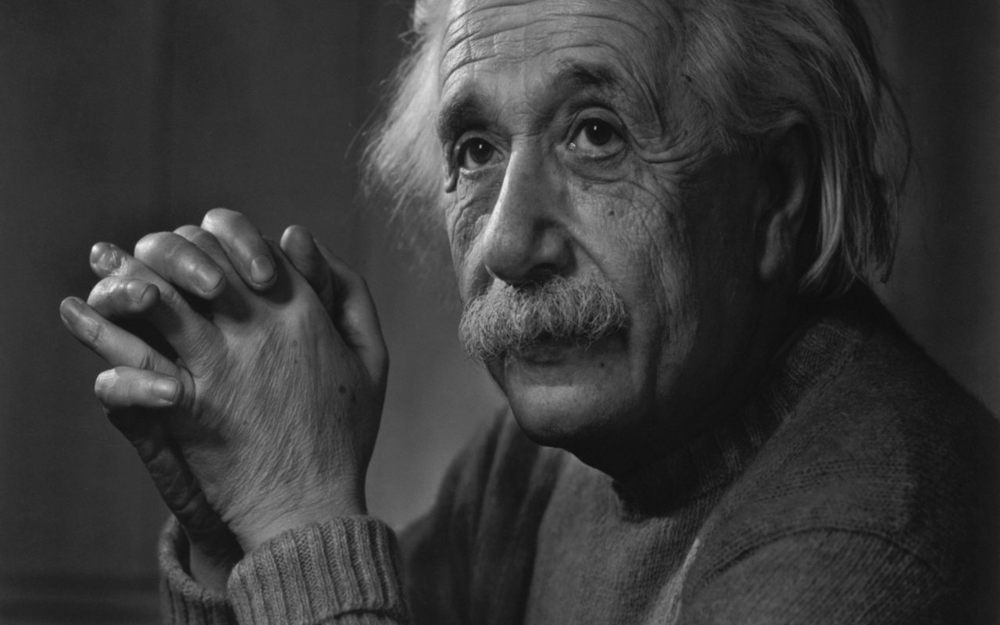
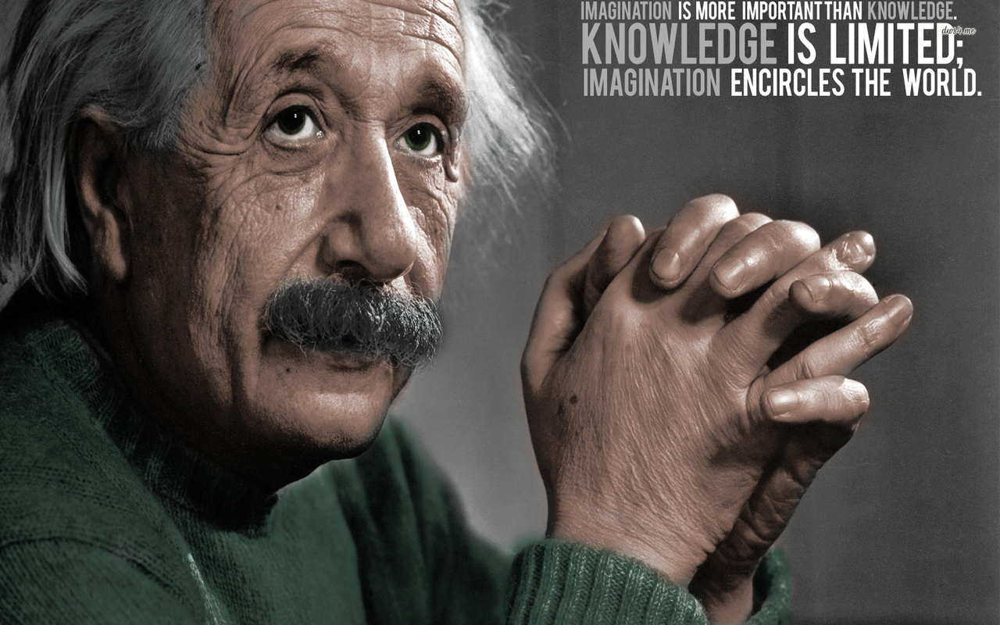

 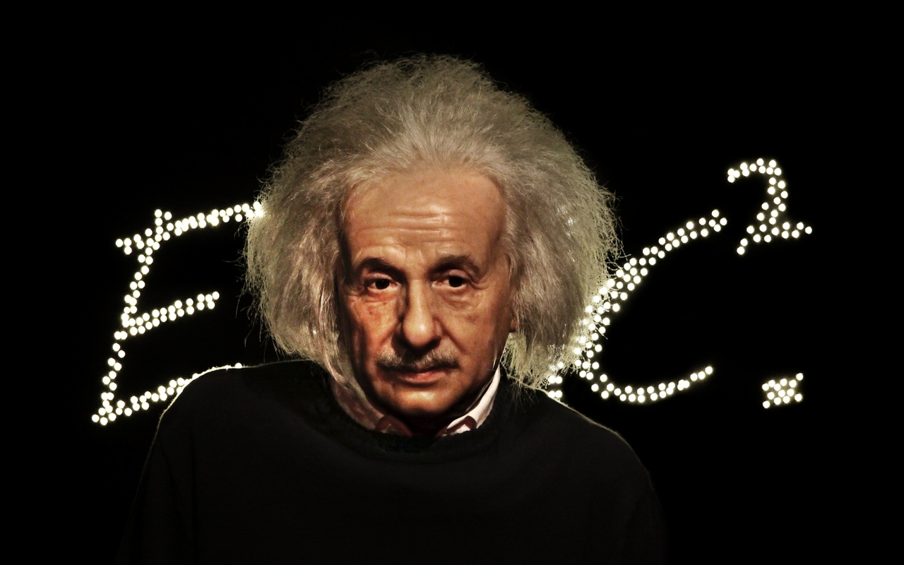
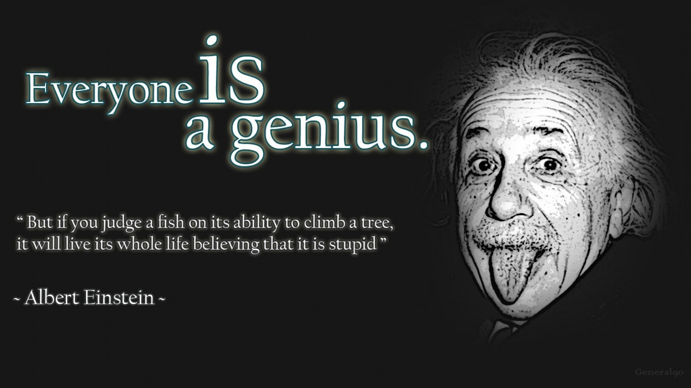
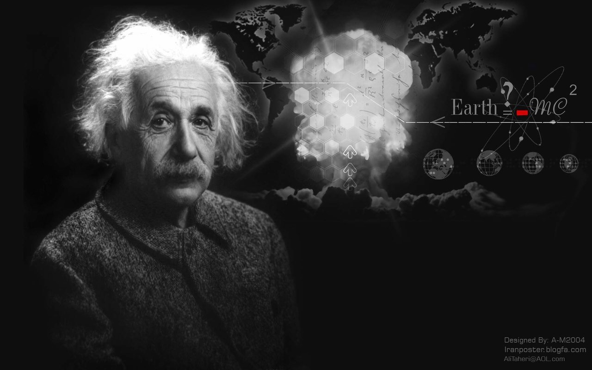
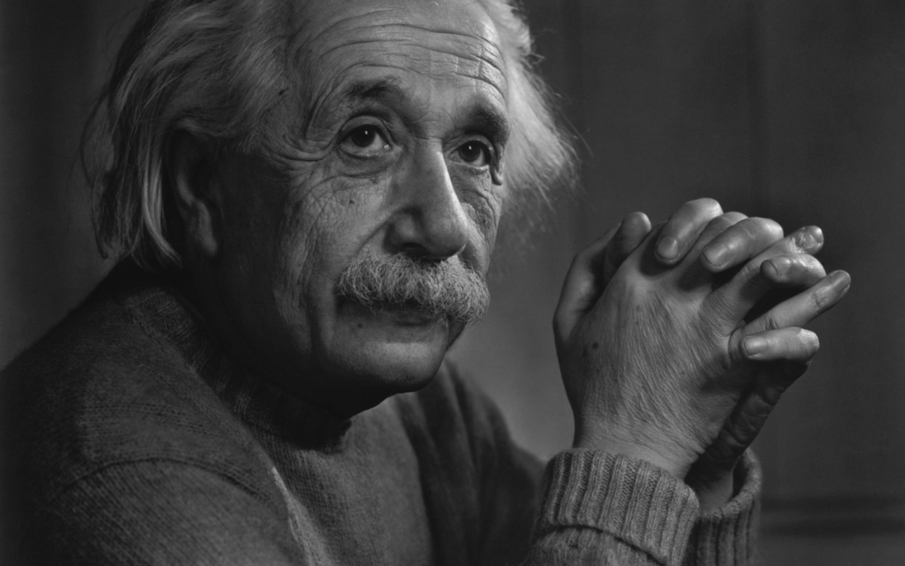
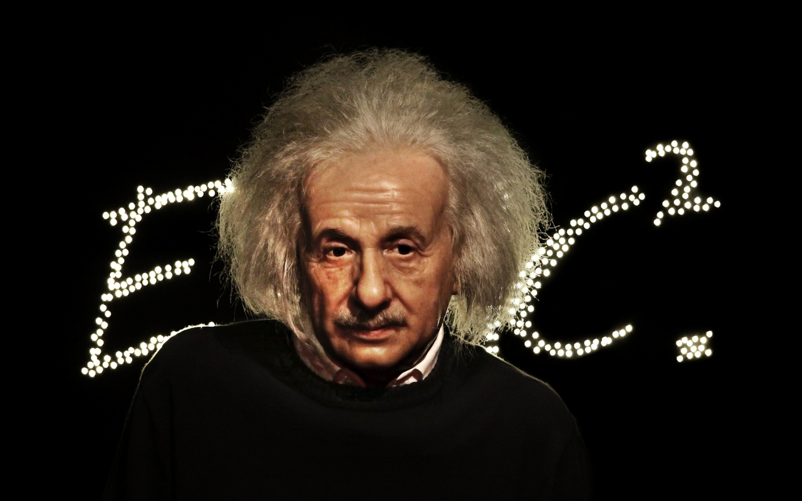
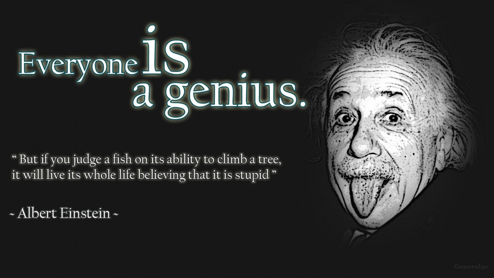
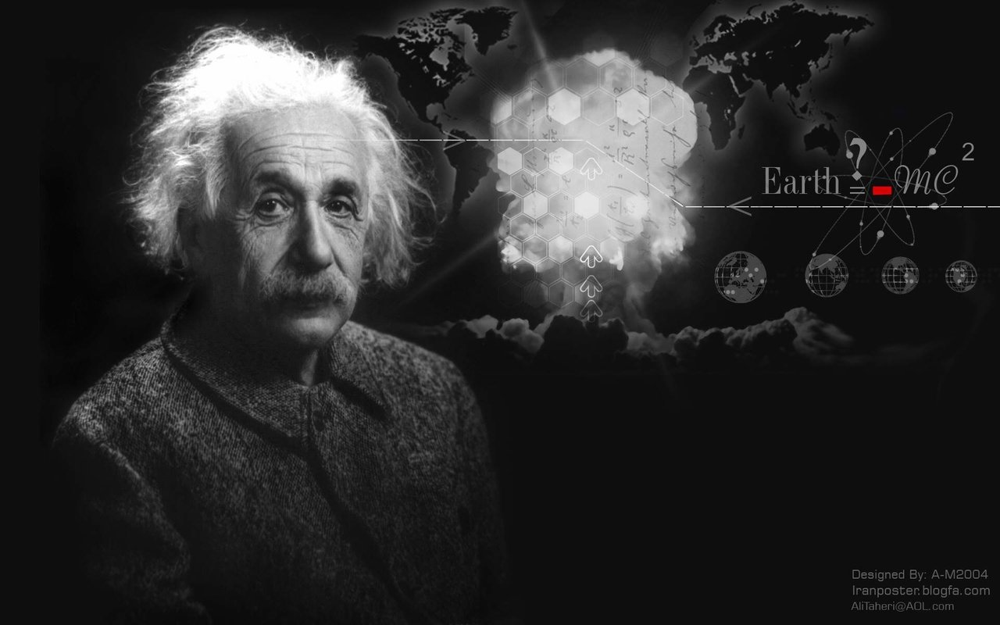
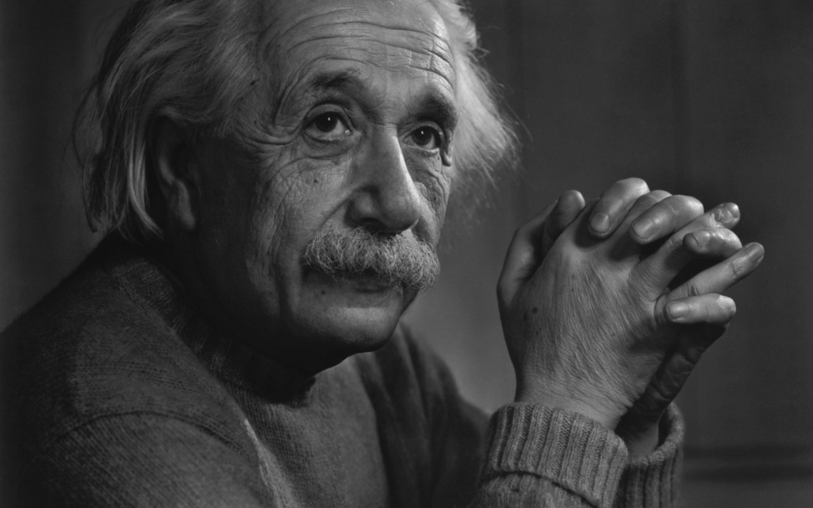
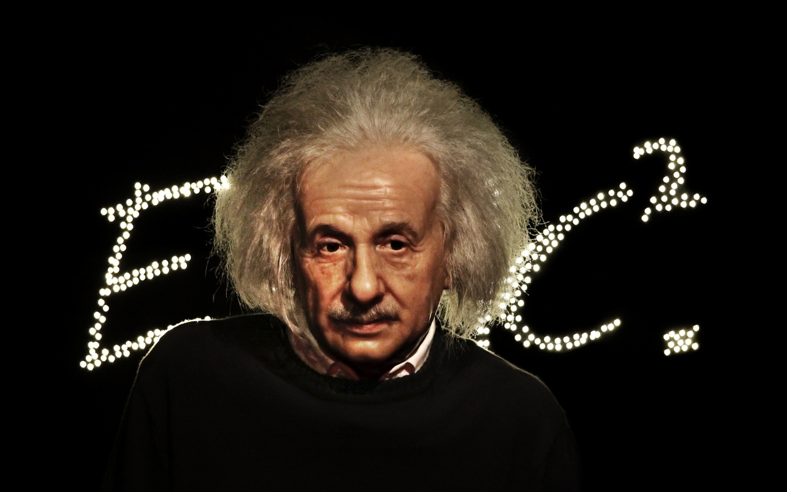
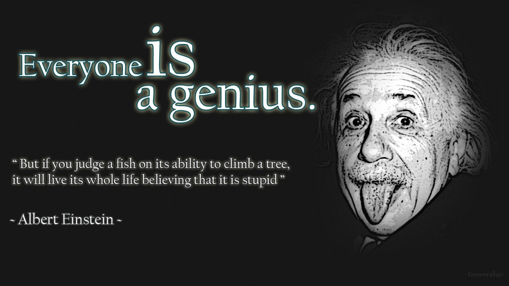
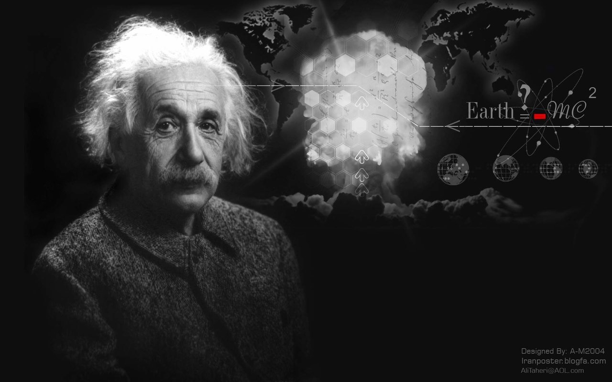
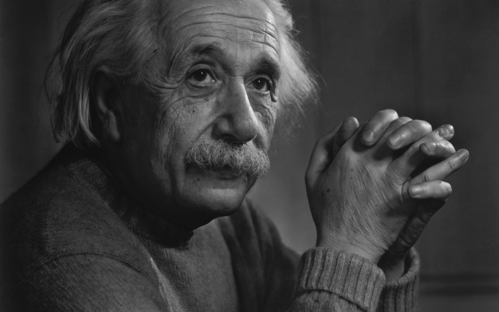